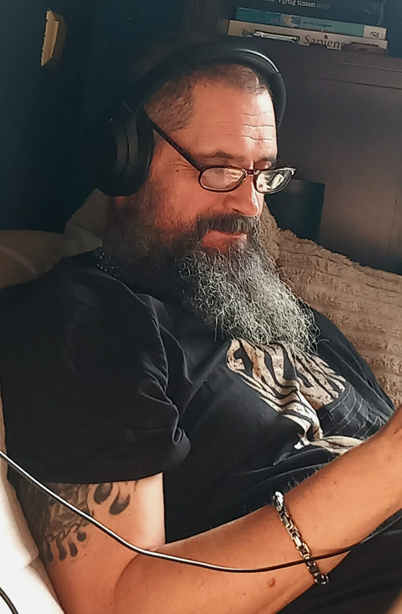

Mångsidig hjälp med anläggningsarbete, renoveringar, installationer och datorer

Ursprungligen kommer jag från Amsterdam i Nederländerna, där jag under många år arbetade inom bygg, teknik och IT. Jag har samlat på mig flera utbildningar, certifikat och lång erfarenhet från olika typer av projekt – även för flera (halv)statliga organisationer. Den kombinationen har gett mig en stark grund inom både praktiskt hantverk och modern teknik.
Nu är jag baserad i vackra Värmland, där jag använder all min erfarenhet för att hjälpa människor med det som behöver fixas, installeras eller förbättras. Oavsett om det handlar om en mindre reparation i hemmet, ett tekniskt problem eller ett större renoveringsprojekt – jag tar mig an varje uppdrag med noggrannhet, yrkesstolthet och en rak, ärlig inställning.
Jag bygger och reparerar också datorer – allt från tysta och effektiva arbetsstationer till högpresterande gamingdatorer med avancerad vätskekylning. Varje bygge anpassas efter kundens behov, med fokus på prestanda, kvalitet och snygg design.
Jag är en praktisk problemlösare som gillar att hitta smarta och hållbara lösningar, både för hem och företag. Du kan räkna med professionella resultat, tydlig kommunikation och rimliga priser från 450 SEK/timme.
Vill du veta mer om mig? Kolla gärna in mina sociala medier nedan, eller skicka ett meddelande via kontaktformuläret – jag hör av mig så snart jag kan.
Ser fram emot att höra från dig!
Baserad i vackra Värmland, men jag reser över hela Sverige för att hjälpa människor att få saker gjorda. Oavsett om det handlar om att hänga upp en lampa, fixa en droppande kran, montera möbler eller göra små reparationer i och runt huset – jag är din go-to person för alla de där vardagliga jobben som får hemmet att kännas komplett.
Jag tar också hand om större projekt som renoveringar, installationer och felsökning – alltid med noggrannhet, kvalitet och en rak, pålitlig inställning.
För teknikentusiaster erbjuder jag även skräddarsydda datorer: jag bygger, uppgraderar och reparerar allt från vanliga arbetsdatorer till kraftfulla gamingriggar med vätskekylning. Varje bygge är anpassat efter dina behov, med fokus på prestanda och en snygg, professionell finish.
Du får ärliga råd, rättvisa priser och en pålitlig service som alltid är on point. Oavsett om du behöver en snabb fix eller planerar något större – låt oss göra det tillsammans!